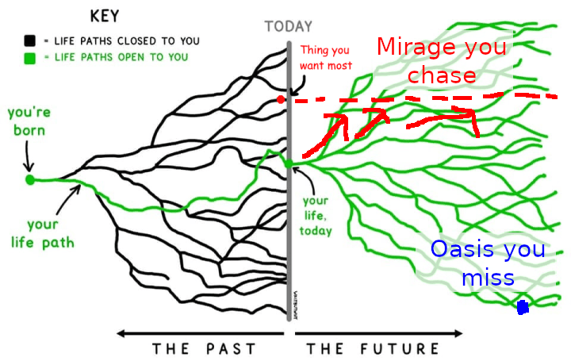

Free Will, Determinism, And Reductive Physicalism
Table of Contents
- 1. Definitions For Discussing Free Will
- 2. The Subject-Object Dichotomy
- 3. Determinism Versus Free Will
- 4. The Deterministic Effects That Parents Have Over Their Children
- 5. Agency Is Always Circumstantial
- 6. Why People Should Be Held Accountable For Their Actions
- 7. Determinism And Free Will From A Mathematical Perspective
- 8. People Cannot Defy Their Brain Structures
- 9. Why We Don’t Describe People And Human Brains With Chemistry And Physics
Note: I will be expanding this file in the future when I have time for it.
1. Definitions For Discussing Free Will
Before we can even talk about this topic, we have to define some definitions for determinism and free will1 since these terms are all vulnerable to the Sapir-Whorf Effect:
- Determinism
- The doctrine that events are determined completely by previously existing causes. Determinism suggests that only one course of events is possible given the materialist configuration of the Universe at a given time t.
- Metaphysical Free Will (MFW)
- The doctrine that agents are able to make decisions independently of external factors. Zero Contradictions argues that MFW is false.
- Hard Determinism
- The doctrine that all events, including human action, are ultimately determined by causes external to the will of agents. In other words, Determinism is true, and MFW is false. Since Zero Contradictions argues that MFW is false, Hard Determinism is effectively the same thing as Determinism.
- Libertarian Free Will (LFW)
- Determinism does not exist. LFW is the exact opposition of Hard Determinism. Libertarian Free Will does not exist in reality, and can be disproven by proof by performative contradiction.
- Compatibilism
- The doctrine that Determinism and Metaphysical Free Will both coexist. Whether or not this is true depends on how the terms are defined.
- Epistemic Free Will (EFW)
- The ability of a subject to consciously choose to do what it wants, regardless of whether it can actually fulfill its desires or not, and also regardless of whether Determinism is true or false.
- Agency
- The satisfaction of two conditions that: 1. a subject can choose to do as it wants, and 2. it is able to do it within its current circumstances. Agency exists on a spectrum, from a subject not being able to accomplish any of its desires, to the subject being able to do everything that it desires.
- Power
- The same thing as agency.
- Desire
- To want something. Desire is a precursor to Epistemic Free Will because Desires are necessary for Values to exist. All sentient organisms have desires.
- Volition
- The same thing as Epistemic Free Will (EFW).
- Subject (philosophy)
- i
- Object (philosophy)
- i
- Subject-Object Dichotomy
- i
- Physicalism
- i
- Reductive Physicalism
- i
2. The Subject-Object Dichotomy
Free will exists from the perspective of a subject in the sense (and to the extent) that it can do what it wants, but only hard determinism can exist in objective terms.
2.1. Chart Regarding Free Will And Compatibilism / Incompatibilism
| Free Will DNE | Free Will Exists | |
|---|---|---|
| Incompatibilism | Hard Determinism2 | Libertarianism (Metaphysical) |
| Compatibilism | N/A | Compatibilism |
3. Determinism Versus Free Will
It is not necessary to acquire any more proof that Metaphysical Free Will doesn’t exist:
- Suggesting that the universe isn’t cause-and-effect, requires that a non-cause could “cause something”. How could something happen if it wasn’t caused to happen? If one argues that the universe random but not deterministic, then that would mean that “randomness” affects the outcome of the universe. The problem with this being the case is that if “randomness” is affecting the Universe’s outcome, then the outcome of the Universe would still be deterministic because the effects of the randomness would be determined by cause-and-effect, so Determinism would still be true.
- There are undeniable instances of determinism in the Universe. Since the definition of Libertarian Free Will requires that Determinism does not exist, Libertarianism is easily refuted.
- There are only two reasons why anybody would ever (purposely) do anything in their life:
- They want to.
- They are forced to.
- They did it accidentally (but of course, nobody would argue that free will existed here anyway).
- If MFW exists, then a performative contradiction arises.
- There is mathematics for better understanding the deterministic nature of the universe.
4. The Deterministic Effects That Parents Have Over Their Children
The point of this list is to demonstrate that the circumstances surrounding every person’s childhood are predetermined, and those circumstances have lasting effects on how every person lives the rest of their lives. No one ever has any Epistemic Free Will over the circumstances that they grew up with. When parents decide to have children, they effectively have the power to:
- Choose where the children live, and in what conditions
- Choose the native language(s) that the children speak, and potentially also their second language(s) too.
- This indirectly affects which people the children can make friends with, their economic and educational opportunities, and the media that they can access
- Choose what the children eat (since they are the ones with the responsibility to feed them)
- Choose the children’s education
- Indoctrinate the children with their beliefs, including religion, politics, and other cults
- Choose the activities that the children do
- Choose the children’s names
- Choose how many siblings the children have, and extend their family histories to the children
- Inseminate the children with whatever genes they have, which can affect things including but not limited to: the children’s interests, the children’s intelligence, the children’s looks, the children’s physical condition, and the children’s quality of life.
When parents have the power to raise their children however they want, they could easily trap those children in a box, and they would never be able to escape until they become adults.
{kind=link}
4.1. Spatio-Temporal Envelopes
The facts stated in the previous list are best understood through the concept of ’spatio-temporal envelopes’, which are defined as time intervals of various defined lengths through which prior events affect posterior events or chains of sequential posterior events across the designated three-dimensional space and time. Spatio-Temporal envelopes may overlap each other, and shorter consecutive spatio-temporal envelopes can be merged to form longer ones. Every individual is endowed with a spatio-temporal envelope that comprises their entire life through which they had, have, and/or will have affected their environment and the people around them.

[This section is unfinished]
5. Agency Is Always Circumstantial
6. Why People Should Be Held Accountable For Their Actions
It’s precisely because people don’t have free will what people should be held accountable when they understood what they did, in order to discourage this behavior in the future or to serve as an example of what will happen to other people in the future if they also break the laws of society. If people truly had free will, such environmental factors wouldn’t influence them. As explained in this section, the goal of government is to solve game-theoretic problems. If negative feedback is not given when people do something bad (i.e. break the prisoner’s dilemmas of society), then that creates an environment where they have no deterrence from doing bad stuff.
And people certainly should be held accountable for their non-coerced choices. If a murderer murders someone, they can hardly appeal to determinism to claim that “they couldn’t help it” and became a victim of some grand mechanism no one has any control over. The murderer was still violating the rights of the victim. Not even the insanity / mental illness plea should be a valid cop-out for committing crimes. It is constantly abused, and we have to hold individuals responsible for their actions, or society breaks down. We each get dealt a hand of cards in life, and that’s the hand each person has to play.
Read More: The Problems With Deontological Ethics
7. Determinism And Free Will From A Mathematical Perspective
In principle, if someone somehow knew absolutely everything there was to know about the current state of the Universe, it is possible that they would be able to predict everyone’s choices in the future with 100% accuracy, but there would still remain choices. They may be predetermined on a very fundamental, physical level, but for practical purposes, it does not make a lot of difference whether we assume those choices to be predetermined or not. And it is not cognitively understandable to reduce someone’s psychological choices down to physics.
Mathematics has a very interesting branch called “Chaos Theory”, which studies models in which small variations in initial conditions lead to dramatic changes in the outcomes. Empirical evidence proves that the Universe as a whole is fairly chaotic, and there are many Butterfly Effects that could’ve changed the course of history in ways that people could never predict with any meaningful accuracy.
Relevant Video: Chaos: The Science of the Butterfly Effect
What this implies is that it is extremely hard, if not altogether impossible, to predict choices people will make in the future, since one of the most important conditions of being a philosophical subject is to have limited knowledge of reality.
When people go about their daily lives, it should not matter whether Metaphysical Free Will exists. It cannot logically, but that is not very important. What is important is that people have agency. If choices cannot be accurately predicted in practice, then they might as well be considered “free” in the true, fundamental sense, as far as practical considerations go.
In fact, if we want to be successful in life, then it is psychologically better for us that we behave as if we do have Metaphysical Free Will, in spite of the Universe’s deterministic nature. If we act as if life is deterministic and that we have no agency to change the future, then we will be less likely to accomplish our goals. Another way to think about our epistemic free will is that it is the Universe’s deterministic nature flowing through us. Our brains and bodies may be materialistic and thus deterministic as well, but each of us is still part of reality, so each of us can still act to change reality to the best of our abilities.
8. People Cannot Defy Their Brain Structures
Some more evidence in favor of materialism is how people cannot defy the physical structure of their brains. If Materialism was not true, then:
- People with dementia would be able to defy their dementia, but they cannot defy their dementia because the build up and clutter of bad proteins within their brains prevents them from doing what they used to do.
- People with OCD would be able to defy their compulsions by just merely wanting to defy them, but they cannot because their brains force them to do the compulsions.
- People with ADHD would be able to resist their impulsive behavior, concentrate, and have high volition, but this is not the case. However, they might be able to take a medication that affects their brain structures to be able to do what they want to do.
- People with brain damage to some area of the brain would still be able to function the same as they did before they got their brain damage.
- People with early onset gender dysphoria would be able to choose to never have gender dysphoric feelings, but they cannot control how they feel about their bodies.
- People with severe autism could choose to not be affected by their autism, but they don’t (because they can’t). If it was that easy to resist autism, then it wouldn’t be a problem.
- People with suicidal thoughts who are unable to die by suicide even though they’ve thought about it for years, since the brain evolved to be terrified of death and unable to kill itself.
- Et Cetera
It is practical in most cases to pretend that Metaphysical Free Will exists when living one’s day-to-day life, even though it doesn’t exist in any form at all. However, this pretending should not be done in all cases, especially ones where the problems to be solved require acknowledging the non-existence of MFW, such as resolving abnormalities in neurological structures that cause the mental disorders mentioned in the list above.
There’s a physicalist explanation to acquired savants too. If you read the biographies of all the people on this list, they always acquired their savant abilities after something physical happened to them (e.g. a concussion, a brain injury, a lightning strike, etc). In most cases, similar incidents would damage people’s brains and reduce their mental abilities altogether, but in rarer cases like the ones listed, the incidents cause them to acquire special abilities instead. Whatever it is, it’s probably just a rewiring of the neurons.
8.1. The Contradiction Between Metaphysical Free Will And Materialism
The arguments in the previous section have proven that we live in a deterministic, materialistic universe. Since we live in a materialistic, deterministic universe, we therefore know what it’s like to live in one. This raises the question: What would it be like to live in a non-deterministic universe? We can imagine what that might be like in the following thought experiment:
- By definition, a non-deterministic universe would mean that life would have Metaphysical Free Will. This means that agents are able to make decisions independently of external factors.
The arguments in the previous section have proven that we live in a deterministic, materialistic universe. Since we live in a materialistic, deterministic universe, we therefore know what it’s like to live in one. This raises the question: What would it be like to live in a non-deterministic universe? We can imagine what that might be like in the following thought experiment:
- By definition, a non-deterministic universe would mean that life would have Metaphysical Free Will. This means that agents are able to make decisions independently of external factors. That also includes that people are not bound to how its DNA or brains are programmed.
- By definition, a non-deterministic universe would mean that life would have Metaphysical Free Will. This means that agents are able to make decisions independently of external factors.
- Free will only concerns life. In our materialistic universe, life is matter that was created with the perfect mix of chemicals to be able to do all its functions and behave the way it does.
- In other words, in an idealist universe, it would be possible to create something that behaves just as life does in our universe, but is able to also not behave as life does in our universe.
- Such a concept would probably be deserving of a different word other than “life”. Perhaps it could be “frilife” (meaning free-will life).
- The minds of frilife would be able to act independently of how they are materialistically structured. No matter what structure frilife has, it would be acting independently according to how some supernatural force desires.
- The structure of the minds of frilife would therefore be completely useless and irrelevant (aside from sending signals throughout the body necessary to maintain basic life-sustaining processes like temperature regulation, pain, senses, et cetera).
- But there’s a problem. If frilife was acting independently to how its mind is structured, what else would it be controlled by to decide how it should behave and function? Another materialistic structure? No, because the premises rule that out as impossible. And there is no other known force in the universe that could make it act independently of its structure. In conclusion (according to everything we currently know obviously), frilife is impossible because it creates a metaphysical contradiction.
- By trying to imagine such as a concept, the text above collectively forms a Proof by Contradiction.
9. Why We Don’t Describe People And Human Brains With Chemistry And Physics
Introduction to Reductive Physicalism:
- Philosophy Basics: Physicalism
- Gödel, Escher, Bach: an Eternal Golden Braid (GEB)
- Kurzgesagt: Emergence
To help support my position in favor of reductive physicalism, I am going to use analogies to computer science since there are so many convenient metaphors and similarities between how brains and computers both work.
Although in theory it is possible to use pure physics to describe how human brains work, it’s not very useful for explaining to a general audience about how brains work because in order to do so, you would need a flawless unabridged understanding of how the entire brain works. That’s one reason why we don’t study psychology or cognitive science in terms of physics. We do not have a complete comprehension of how the brain works.
The other reason is that it would take too much effort to describe psychology and cognitive science in terms of physics. If an analogy is to do be made it’s comparable to machine code versus higher-level human-friendly programming languages. No productive programmer would ever program only with machine code because it would take too much effort and complex understanding just to produce so little. Instead, we use human-friendly programming languages because they use words, syntax, APIs, etc. that make more sense to us humans, even though it is unquestionably helpful to understand at least some low-level details about how everything is running.
Thus, when we study psychology, cognitive science, and the like, we need to use terms that make sense to you and me, which is why those fields have a lot of terminology and descriptions to learn (which are actually simplified translations of what the physics is doing). And of course, every psychologist and cognitive scientist learns at least some basics about the structures and functions of neurons, as well as the regions of the brain.
But as humans learn more and more about how the brain works, we will eventually be able to create more precise physical descriptions of what the processes described psychology and cognitive science are metaphysically. This is a huge milestone because just as computer science students learn what happens behind the scenes in a high-level programming language, we would be learning what happens behind the scenes in our high-level languages: psychology and cognitive science.
Another important connection to be made is that when humans made computers, machine code was invented first because computers had to be invented from the ground up. But that was too difficult to use and understand, so we invented higher-level languages like Fortran, C, Java, Python, etc.
The reverse is happening with neuroscience. When humans finally tried understanding how their own brains work, they were not building machinery from the ground up. Instead, the machinery was already there, and over millions of years of evolution, it had evolved to be so complex, that there was no possible, sensible way to study the neurological machinery with machine code (physics that is) straight out of the gate. So in order to understand their brains, they had to use high-level language to understand it, first beginning with mapping the different regions of the brain (figured out by finding what stops working when each individual region fails/breaks/isremoved), and proceeding with trying to understand it at biological, biomolecular, chemical, and eventually physical means.
Humans will never be able to fully understand how the brain works until they acquire exhaustive physical, chemical, and biomolecular explanations for what is happening behinds the scenes. But even after we reach an understanding of those processes, we will still probably continue to use human-friendly descriptions for what is happening. And if someone who wants a deeper understanding wants to dig deeper, they can always learn the physics and chemistry behind those processes (after they are discovered and understood of course).
Machine code is to physics and chemistry, as programming languages are to psychology, cognitive science, and simplified to intermediate neuroscience. And advanced neuroscience would be akin to lower-level machine code.
So when opponents of physicalism say that “the brain cannot simply be understood as neurons firing around in different ways. It’s so much more than that.”, I personally interpret this as “a computer cannot simply be understood as just merely being 1s and 0s. It’s so much more than that.” Of course you wouldn’t learn and understand how a computer works starting straight from machine code (1s and 0s, not even assembly code), but you would understand that what’s going on behind the scenes is fundamentally 1s and 0s. Same thing with human brains. We understand that they are essentially and metaphysically composed of neurons, but when we start learning and understanding it with basic understandings, we start from our higher-level explanations, which are farther removed from the basics.
The hard problem of consciousness is irrelevant so long as experience always supervenes on observable physiological states. “Mary is seeing red” can be reduced to “Mary’s visual cortex is firing in a pattern which indicates a red experience.” The same predictions can be made from either, so they can be said, by that standard, to mean the same thing.
9.1. Two Analogies For Understanding Physicalism
Computer science is to neuroscience, as high-level programming languages are to psychology and cognitive science, as assembly is to chemistry, as machine code is to physics.
Neuroscience is to computer science, as psychology and cognitive science are to high-level programming languages, as physics and chemistry are to machine code and assembly.
Seeing the brain as something different just because it’s able to do all these amazing things is an illusion. Reality does not make a distinction. When it examines all the physical things are to see, it only sees just a bunch of neurons, regardless of what those neurons are capable of doing.
Question: Where do Fallacy of Composition / Fallacy of Division come into play?
Footnotes:
The noun phrase “Free Will” tends to be categorized more often as an epistemological concept, whereas determinism is seen more as a metaphysical concept. But “metaphysics” is a rather misleading concept to begin with since it leads people into believing in Platonism, for which there isn’t very strong evidence to support.
Technically, Hard Determinism is not the same thing as Materialistic Physicalism. It’s possible to be a hard determinist and devoutly religious at the same time, as some religious and superstitious people believe that nobody has any free will because everybody’s actions are ultimately determined by some God. Such people are not materialists or physicalists, so that’s an example of how Hard Determinism and Materialistic Physicalism are not necessarily the same thing. I’ve added this footnote because I had previously never thought of this.